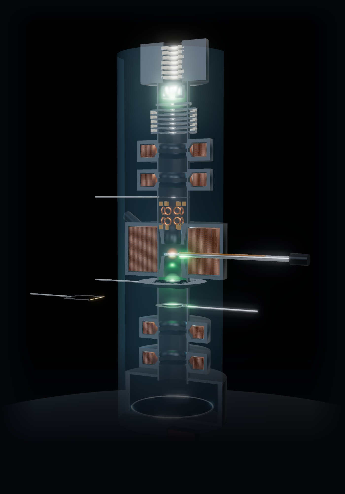
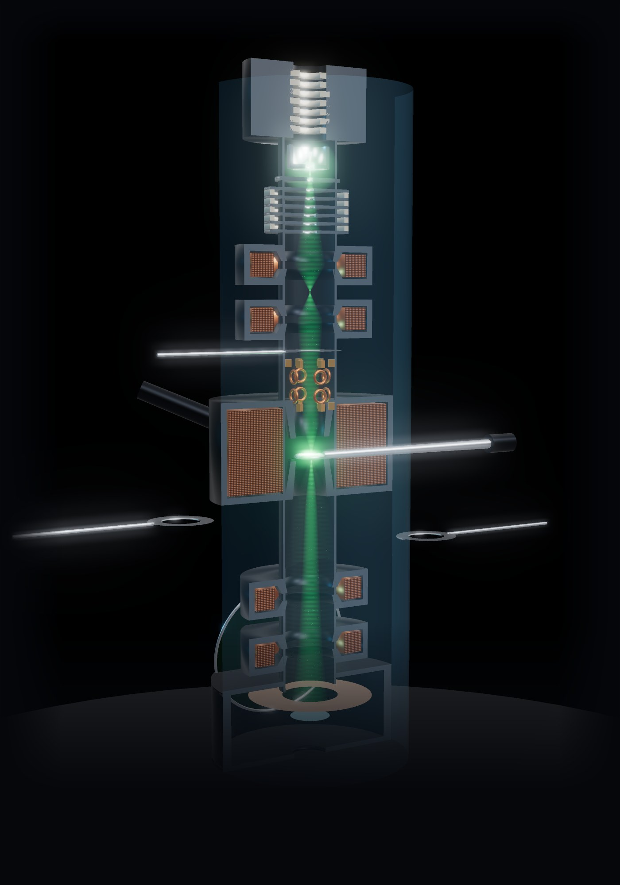
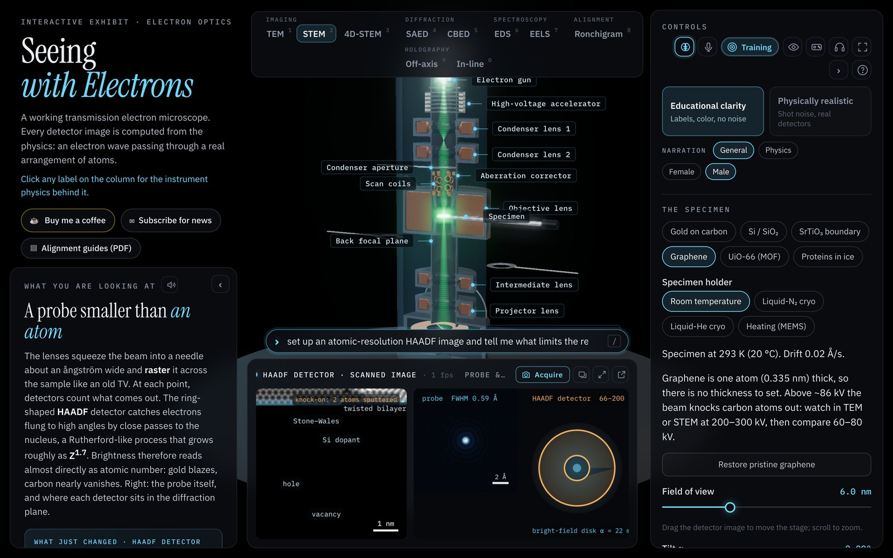

Procedures and guides
Printable procedures with figures computed by TEM-view. Free to use for training; follow your facility's procedures and the manufacturer's documentation.

SOP-01 · TEM direct alignmentGun (Flash & Go for cold FEG), illumination and C2 aperture, eucentric height, pivot points and voltage center, objective stigmator. 8 pages, PDF.

SOP-02 · STEM alignmentProbe setup, Ronchigram focus and centering, aberration correction, detectors, final focus and stigmation. 7 pages, PDF.

SOP-03 · AI agents, MCP and skillsConnect Claude, OpenAI Codex, Ollama or another MCP client to TEM-view; use and contribute emskills skills; test commands beyond the built-in ones. 10 pages, PDF.

SOP-04 · Python scriptingThe exhibit's Python IDE, the temview package (headless or live), the calls, testing automation with challenges, batch data and regression tests. 10 pages, PDF.